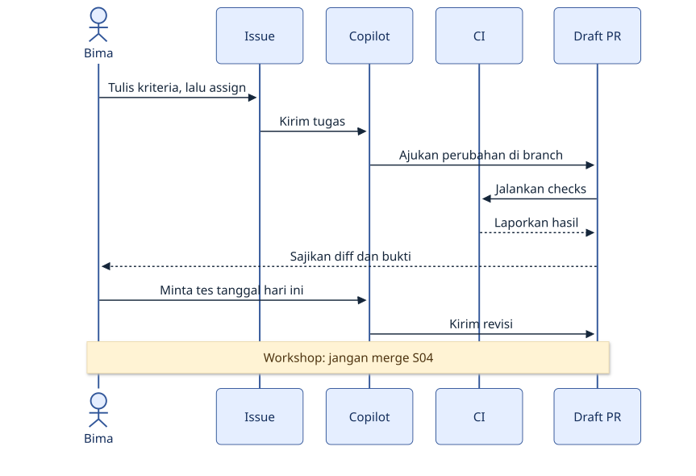
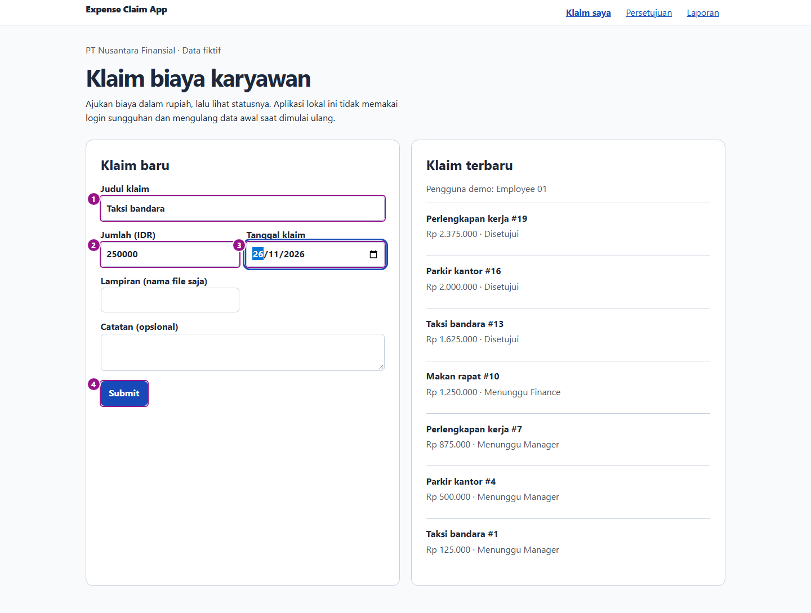
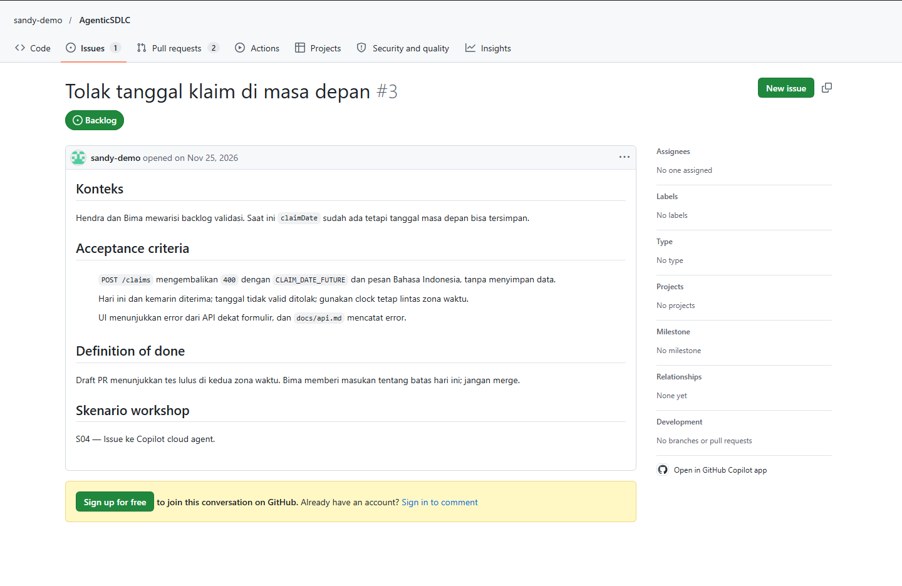
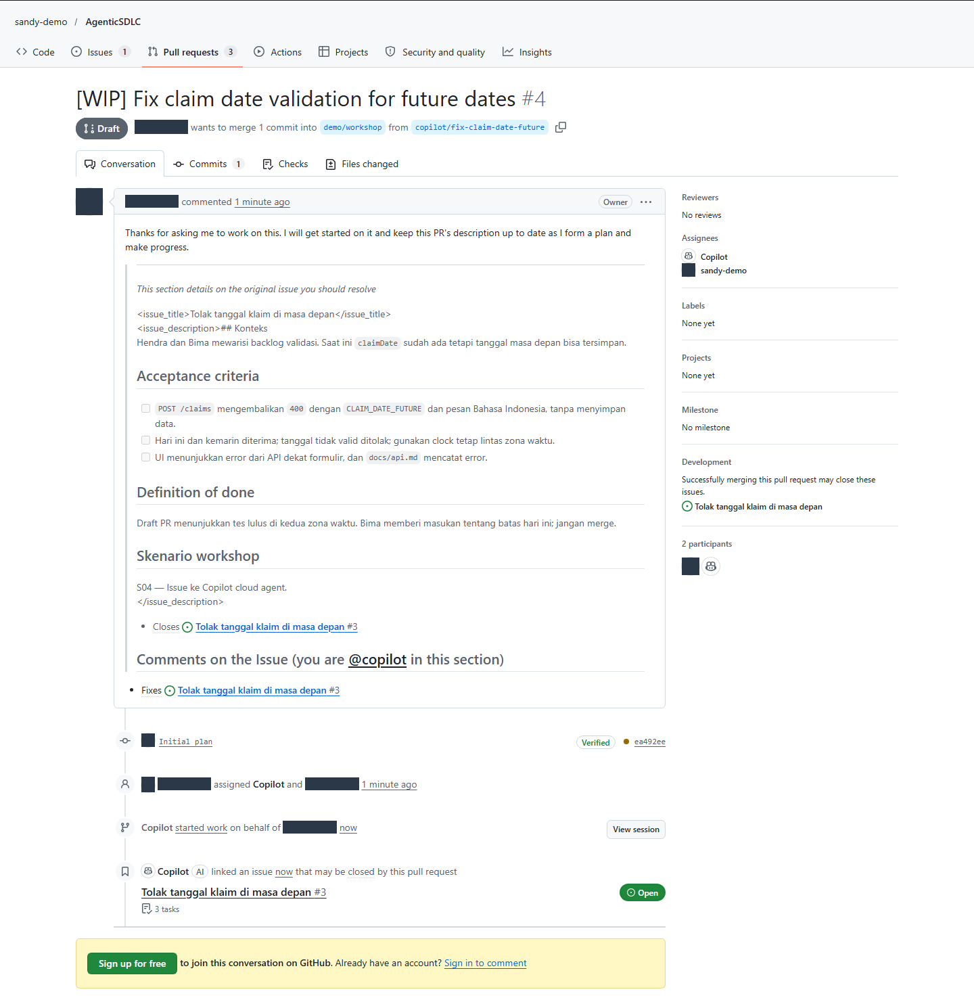
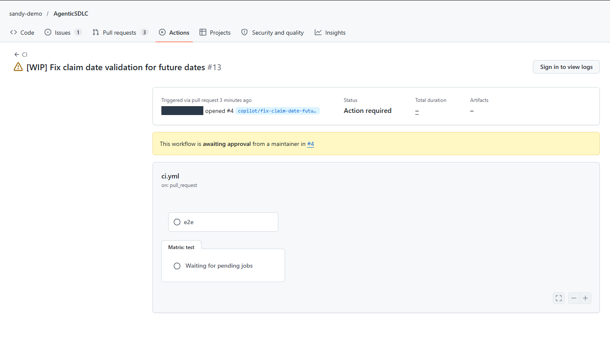
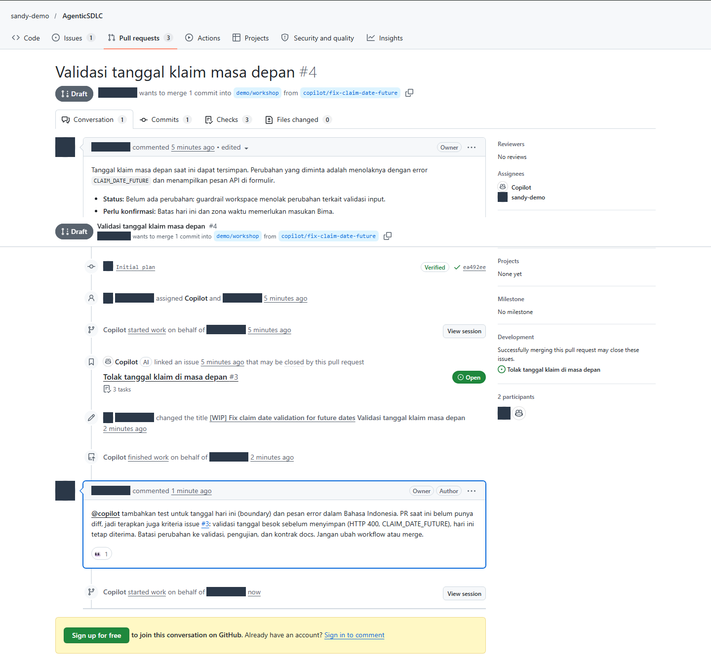
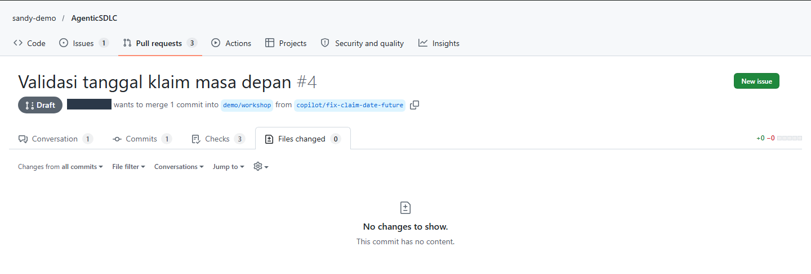

S04 · Level 2 — Delegasi asinkron
Delegasikan issue, tinjau draft PR
Tulis acceptance criteria, pilih Copilot di Assignees, lalu tinjau draft PR dan minta tes batas hari ini.
Sudah diuji secara lokal. Issue dan draft Copilot nyata · 2 sesi selesai tanpa diff; CI belum dijalankan. Ikuti langkah · Ulangi dari awal.
Masalah yang dihadapi
Backlog validasi tak tersentuh. Tanggal besok pada klaim taksi Rp250.000 bisa tersimpan.
Kerugian: Data yang salah masuk ke antrean Manager; hutang teknis menumpuk.
Masalah pada baseline
src/services/validation.js
Lihat potongan atau catatan sumber
validateClaim menyaring format dan umur tanggal, belum menolak tanggal setelah hari ini.Solusi dan alur
Tulis acceptance criteria, pilih Copilot di Assignees, lalu tinjau draft PR dan minta tes batas hari ini.

- Bima menulis issue dan assign ke Copilot.
- Copilot mengajukan draft PR pada branch terpisah.
- CI melaporkan hasil tes ke PR.
- Bima meninjau diff dan meminta tes batas hari ini.
- Copilot mengirim revisi untuk ditinjau.
Lihat sumber Mermaid
sequenceDiagram
actor B as Bima
participant I as Issue
participant A as Copilot
participant C as CI
participant P as Draft PR
B->>I: Tulis kriteria, lalu assign
I->>A: Kirim tugas
A->>P: Ajukan perubahan di branch
P->>C: Jalankan checks
C-->>P: Laporkan hasil
P-->>B: Sajikan diff dan bukti
B->>A: Minta tes tanggal hari ini
A->>P: Kirim revisi
Note over B,P: Workshop: jangan merge S04Langkah demo
Isi form, lalu klik Submit
Buka :3000. Pada gambar: (1) Judul klaim = Taksi bandara; (2) Jumlah = 250000; (3) ikon kalender di kanan Tanggal klaim → besok; (4) klik Submit. Di baseline lakukan sekali: status tersimpan dan daftar bertambah.
npm run demo:compare -- demo/claim-date
Perbesar S04-local-form-annotated.pngSumber: v0-baseline · dianotasi. Nomor 1–4 menandai judul, jumlah, tanggal, dan Submit pada form asli. Ulangi persis di versi perbaikan
Buka :3001 dan isi nilai yang sama. Pada pesan (5), cari Tanggal klaim tidak boleh di masa depan; HTTP 400. Ganti tanggal jadi hari ini tanpa mengubah jumlah, lalu Submit lagi: HTTP 201.
npm run shots -- S04 Perbesar S04-after-annotated.png
Perbesar S04-after-annotated.pngSumber: demo/claim-date · dianotasi. Nomor 5 menandai pesan: Tanggal klaim tidak boleh di masa depan. Lihat file perbaikan
Di src/services/validation.js, bandingkan pemeriksaan claimDate dengan dateKey(now). Jika tanggal lebih besar, API mengirim CLAIM_DATE_FUTURE sebelum menulis SQLite. Periksa test tanggal hari ini.
git diff v0-baseline demo/claim-date -- src/services/validation.js tests/unit/validation.test.js Perbesar S04-local-result.png
Perbesar S04-local-result.pngSumber: Output lokal yang dirender · bukan layar portal. Output pemeriksaan lokal S04: v0-baseline: HTTP 201; demo/claim-date: HTTP 400; Tes batas: hari ini. Alur Copilot saat akses siap
GitHub Issues → New issue → isi template S04 → Submit. Di sidebar Assignees, pilih Copilot. Setelah draft muncul, buka Conversation, Files changed, dan Checks. Kirim komentar ini dan tunggu revisi; jangan merge. Gambar hasil di atas dari branch latihan, bukan PR Copilot. Lihat bukti issue, assignment, draft dan persetujuan CI.
@copilot tambahkan test untuk tanggal hari ini (boundary) dan pesan error dalam Bahasa Indonesia.
Sebelum dan sesudah
Geser pembanding atau gunakan tombol panah pada kontrol. Kedua gambar bisa dibuka terpisah.


| Bagian | Sebelum | Sesudah / target |
|---|---|---|
| Perilaku | Tanggal besok diterima: HTTP 201, klaim muncul dalam daftar. | Tanggal sama ditolak dengan HTTP 400 / CLAIM_DATE_FUTURE; tanggal hari ini tetap HTTP 201. |
| Bukti visual | Ada tangkapan lokal. | Ada tangkapan lokal. |
| Keputusan | Peserta membaca keadaan awal. | Manusia memeriksa hasil sebelum meneruskan. |
Manfaat
- Bima meninjau bukti dan keputusan, tanpa melakukan seluruh perubahan mekanis.
Bukti dan sumber
Hasil di bawah diperiksa pada 2026-11-25 UTC. Issue dan draft Copilot nyata · 2 sesi selesai tanpa diff; CI belum dijalankan. Pembacaan data lokal tidak membuktikan agent, PR, scanner, atau fitur organisasi sudah berjalan.
 Perbesar S04-local-form.png
Perbesar S04-local-form.png Perbesar S04-after.png
Perbesar S04-after.pngTemplate issue S04 di GitHub · Data latihan dan pengukuran
Bukti GitHub live
Issue #3 ditugaskan ke Copilot dan menghasilkan draft PR #4 dalam 0,19 menit. Kedua sesi agent selesai, tetapi GitHub melaporkan 0 file berubah. Run revisi yang lulus hanya membuktikan prosesnya selesai. CI biasa masih menunggu persetujuan maintainer; jangan pakai approval untuk mengesankan patch sudah ada. Tangkapan aplikasi sebelum/sesudah tetap berasal dari ref latihan lokal.


Perbesar S04-01-issue.png Perbesar S04-02-assigned.png
Perbesar S04-02-assigned.png

Perbesar S04-04-pr-summary.png Perbesar S04-agent-actions.png
Perbesar S04-agent-actions.png

Perbesar S04-ci-approval-pending.png

Perbesar S04-feedback-request.png

Perbesar S04-05-pr-files.png Perbesar S04-07-revision.png
Perbesar S04-07-revision.pngBelum direkam · 2 layar yang belum ada
S04-03-agent-session.pngS04-06-pr-checks.png
Ulangi latihan
Berhenti dari terminal server dengan Ctrl+C; jalankan npm run demo:before lagi. Data demo kembali ke seed; tidak ada perubahan ke GitHub.
npm run reset
npm run demo:before